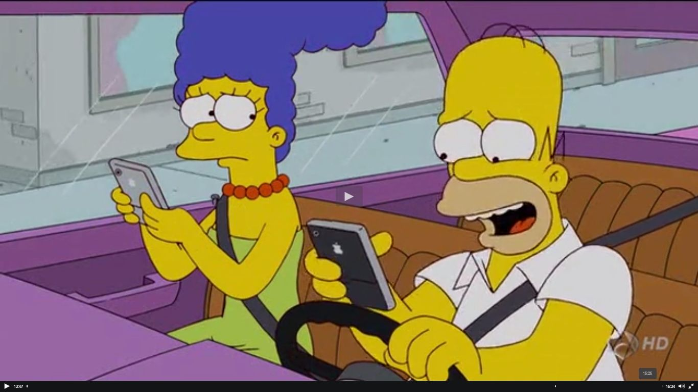

Los Simpson son algo más que una serie de "dibujitos"

Como la serie de la familia de Springfield es más profunda de lo que la gente piensa.
LEER MÁSLa razón real de la muerte de Maude Flanders

En este artículo se observa la razón real de porque dejo de aparecer Maude Flanders en la serie.
LEER MÁSLa profundidad en Los Simpson: Sátira Social y Comentarios Políticos
¿Qué hay más allá de la superficie?
LEER MÁSSimulador del Departamento de Policía de Springfield

Simulador del sitio web del Departamento de Policía de Springfield; basado en una escena de Homer navegando por la red
LEER MÁS